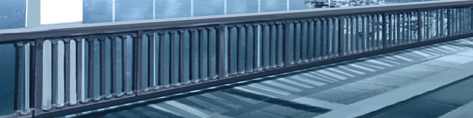

当晴朗的天空开始转暗的时候。 银色的酷派依然在高速公路上飞驰着。 很快就会抵达桂川休息区了。 我们一直保持着每前进一段就歇息一下的节奏。 在下个休息区也休息一下吧」 「啊，哦，嗯···」 「···你怎么了？」 「只是有点累了···」 「是吗···」 她刚才一直都那么兴奋， 何况，我们还不是普通的病人。 「那么，我去给你买点吃的吧」 「···嗯」 「稍等一下，我很快就回来」 我快步走向一家杂货店， 买回了一些与便利店食品差不多的东西。 「给你，运动饮料和饭团，还有马铃薯」 「啊，嗯···」 尽管她开口回应了我， 但却始终不肯张开嘴吃那些食物。 记得她平时总会抢着吃马铃薯的··· 「···没事吧？」 「·········」 「莫非··你身体不舒服吗···」 「·········」 「···只是···药被吃光了」 「···是吗···」 ···药被吃光了。 这是我曾经担心过的事情。 不，从逃出医院的那一刻开始， 这一切就早已在预料之中了。 当然了，我并不是故意要忽略掉这件事。 只是至今为止都没去考虑过它··· 也没想要去考虑它。 「是什么时候吃光的？」 「···昨晚」 「那就是说，已经整整一天了···」 医生说过，我不吃药的话最多只能坚持两天。 恐怕她的情况也与我差不多吧。 从逃出医院那天算起， 已经过去8天了。 仅凭我们随身带走的那些药物， 早晚都会有这一天的。 ···现在，我究竟该怎么办才好呢··· 「那个···」 「···我可不喜欢7楼哦」 「嗯，我明白，你也不喜欢家吧？」 「嗯···」 银色的酷派再次开动了。 我最终选择由下一个路口离开了高速公路。 尽管心中仍是一团乱麻， 但继续留在高速公路上，是不会有什么解决办法的。 通过偏僻的高速公路出口后 我径直驶入了市区 沿途细心寻找着规模较大的医院 准确的说，是寻找着位于大医院附近的药店 或许到医院就诊才是最好的办法 假如这是一般疾病的话，我也会毫不犹豫地那样做 但我们是7楼的居民 卷在手腕上的塑料手环是白色的 而且，我们逃出了7楼 我一边思索着这些 一边握着方向盘东张西望 在大医院附近的药店里 药品一定是比较齐全的 「找到了」 我在大道一侧找到了一家大学医院。 周围竖立着两三块药店的广告牌。 因为无法在路边停车， 我将车停放在了一处空地。 「把装药的袋子给我」 「啊，嗯···」 她有些不解地将药袋递给了我。 我接过那病房用的药袋， 从里边取出了药品的服用说明。 带着这个去就可以了吧。 「你在这里稍微等一下」 我将她留在车内， 走向了对面的药店。 我穿过开闭缓慢的自动门，来到店里， 径直走向了柜台。 「欢迎光临」 打招呼的是一位中年大叔。 他穿着一身白衣，一眼便能看出是一位药剂师。 「麻烦您帮我找一下这种药吧」 「嗯，请稍等一下···」 说完，他拿着那张服用说明， 走进了存药库。 ···与普通的药店相比， 大概这里也会同时贩卖医院专用的药物吧。 记得以前去医院就诊的时候， 我也曾经在类似的药店里取过药。 这所药店明显建在大医院的附近， 所以药品也一定比较齐全。 「让您久等了。这是您需要的药物」 很快，大叔便走了出来。 手中拿着两捆胶囊状的药物。 ···有这些就足够了。 看上去至少也可以维持1个星期了。 正当我打算从口袋中取出钱包的时候··· 「啊，你可以先出示一下药笺吗？」 「药笺？」 「嗯，也就是处方笺。因为这是临床药物嘛」 「······」 「医生肯定给您开过吧？」 ···我没有预料到这一点。 冷静分析一下的话，这根本不是常用药物， 也不可能轻易就买到的。 「您怎么了？」 「啊，不，那个···」 看到我支支吾吾的， 穿白衣的大叔感到有些奇怪。 「咦···那是···？」 这时，他注意到我手上的白色手环， 紧紧盯住了上边的文字··· 我的姓名，血型··· ···以及医院的名字。 「啊」 我反射性地一把抓起了柜台上的药物。 「喂，站住」 售货员在柜台的另一侧大声喊叫着。 但声音是从背后传来的，我已经拔腿而逃了。 距离药店的出口还有5米。 尽管双腿不停颤抖， 但我还是拼命地跑着。 我正打算穿过开闭缓慢的自动门， 冲出店外··· 这时， 「啊···」 眼前一片煞白。 我的头撞上自动门的一角， 连玻璃也在剧烈的撞击中被震碎了。 我摇了摇昏沉沉的头， 用手强行拉开停止运转的自动门。 随后，拔腿逃离了药店。 怀里依然紧紧抱着那袋药物。 我喘着粗气奔跑着。 距离车子不到十几米的路程，对我来说是如此的漫长。 似乎没有人追过来， 而我也根本没有余力去回头确认。 ···万一，我被抓住的话··· 她会怎么样呢··· 她会一个人待在车里， 一直等着我的回来吗··· 我一边胡思乱想，一边拼命地奔跑着··· 全身颤抖，气喘吁吁， 我为自己的体力感到可悲。 「呼呼···」 我一屁股倒在坐席上，迅速发动了引擎。 和逃离赌场的那一天相比， 我的体力更差了。 看了看后视镜， 额头被玻璃割伤，流了一点血。 ···出血并不严重，大概很快就会止住的吧。 我一边驾驶，一边用纸巾按住了伤口。 「···没事吧？」 「嗯，没事」 「可是出血了啊···」 「···不用担心，没事的」 看到她似乎有些担心， 我便故作轻松地向她挥了挥手。 然后，将紧握在左手中的那包药物递给了她。 「给你，快点吃吧」 「啊，嗯···」 这样一来，暂时就不必担心了。 至少也可以坚持1个星期。 但是··· 当这些药也被吃光之后，我又该怎么办呢？ 今天只是运气比较好而已， 我的体力也显然一日不如一日了。 ···我们原本既没有目的地也没有去处。 假如没有追求的东西，自然也不会惧怕失去什么。 但是，现在已经不同了。 「丧失」的恐惧感···1月29日 吹田交流道 神户交流道 明石海峡大桥晴朗的一天。 天空映射着冬日特有的蔚蓝色。 我们再次开上了高速公路。 这次是从吹田交流道驶进了中国公路。 「接下来该怎么走？」 「转入神户道···」 「明白了，之后进入山阳高速吧？」 「嗯」 银色的酷派在她的指引下行驶着。 来到这里， 已经偶尔会在路标上看到「淡路岛」的字样了。 自从我们逃出7楼以来， 里程表的计数已经转过了900km。 尽管这一切当初简直就像是天方夜谭··· 但现在，我们已经渐渐接近目的地了。 很快，一座大桥出现在了我们的面前。  「这就是明石海峡大桥吧···真壮观啊」 「···嗯」 我们不由得同时发出了感叹。 大桥似乎在海面上空无尽地延伸着。 在大桥上行驶了片刻后。 我们发现桥上有很多人都将车停在路边。 他们全都走下车来，拍摄纪念照片， 大概都是来这里观光的游客吧。 我也像他们那样，将车停靠在了路边。 「···这里禁止停车的」 「稍微停一下，没事的」 何况，旁边还停着好几辆车。 「咱们到外边去看看吧」 「·····」 「风景一定很壮观哦」 「好吧···」 尽管有些不情愿， 但她还是随我一同走下了车。 强烈冰冷的海风在桥面上呼啸而过。 「这里可真冷啊···」 「···嗯」 因为平时很少走下车， 对我们来说更是增添了一份寒冷。 与我们相反， 一对情侣正在对面嬉戏着。 大概是在拍摄纪念照吧。 从这里也能听到他们的谈笑声。 仔细看看周围， 还有很多正在拍照的家族和旅行团。 ···纪念照片吗。 来到这样的地方，的确是应该留下一张才对的。 「对了···」 「···怎么了？」 「啊，你稍等一下」 「啊，嗯···」 记得车里有一台照相机的。 我想起了最初清点车内物品时发现的那台一次性相机。 如果没记错的话，里边还剩有几张胶卷··· 我翻出照相机，检查了一下胶卷。 「太好了，还剩下两张呢···」 「让你久等了。来，我给你拍一张」 「诶···」 「我给你拍照片啊，难得来到这里一次嘛」 「···不拍」 「别这么说嘛。快摆个造型吧」 说着，我向她举起了相机。 「·····」 「来，笑一笑嘛」 「·····」 但她大概是害羞吧， 好不容易将脸转了过来，却是一副生硬的表情。 ···不过··· 这对她来说， 或许已经是很尽力地在笑了。 正当我一边这样想着，一边取景的时候， 「对不起，能帮我们拍张照片吗？」 「啊，嗯，好的···」 一对情侣拿着相机走到了我们的身边。 「我要拍了，你们准备好了吗？」 「嗯，麻烦你了」 他们高兴地相拥在一起微笑着。 我取好景后，按下了快门。 「谢谢你了」 「我们也帮你们来拍一张吧」 「啊，不，我们···」 「用这个相机就可以了吧？」 还没等我回答，男子就从我的手中接过了··· 不，应该说是抢走了相机。 大概是想答谢我们吧。 他不顾我们的一脸迷茫，举起了相机。 「你们俩再靠近点嘛」 我只好照着吩咐向她靠近了一步。 尽管依旧面无表情， 她也小心地向我靠近了一步。 「那个，你们俩最好摆个什么姿势吧」 男子仍然不断地提出新的要求。 他的女朋友也正哭笑不得地看着我们。 我在心中叹了口气··· 慢慢地搂住了她的肩膀。 「···啊······」 第一次，触摸到了她的身体。 前几天买来的那件幼稚的服装， 与齐腰长发的感触。 因为注视着正面的相机， 所以我看不到她的表情··· 不过··· 或许，她现在正摆着那副偶尔才能看到的， 好似害羞又好似倔强的表情吧··· 「我要拍了」 满意地拍完照片后， 那对情侣返回了车子。 我们也向自己的车子走去。 「女朋友···吗」 「好像被他们误会了啊」 「······」 「莫非，我们看起来真的很像情侣吗？」 「······」 我有些半开玩笑地说道。 因为感到很开心， 便继续这样说了下去。 「你认为···啊，不···」 「濑津美，你认为呢？」 「···············」 「···什么嘛···你明明年纪比我小···」 但她没有搭理我的话， 还是在静静地凝视着窗外。 丝毫也没有转头看我一眼的意思。 但是··· 我想，她并不是在眺望着远方， 而是在遮掩着自己的害羞。1月29日 洲本交流道正午 盯着一望无际的冬日晴空 驶出明石海峡大桥后，我们很快进入了洲本交流道 然后，再次转入了普通公路 「终于来到这里了···」 「···嗯」 自从逃出7楼的那一天以来， 里程表的计数已经转过了900km。 最初的一切仅仅是出于偶然， 但现在，我们真的来到了这里。 「那么，接下来该怎么走呢？」 「向南···」 「向南吗···明白了」 我按照她的指示前进着。 其实，到达这里以后，我自己也能分辨出路线了。 因为周围竖立着很多作观光指南用的看板。 但是，我依然遵循着她的指示 我认为自己必须这样做。 为了她，我愿意这样做···
第六章 エコー